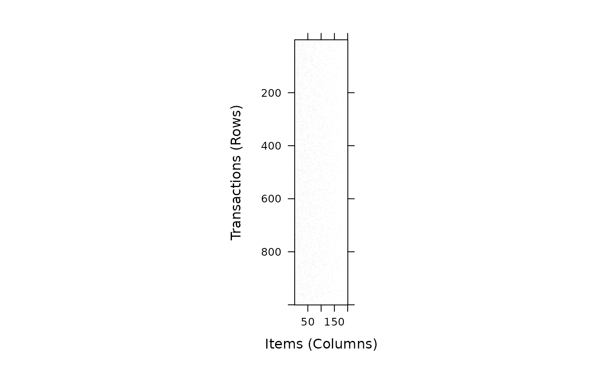
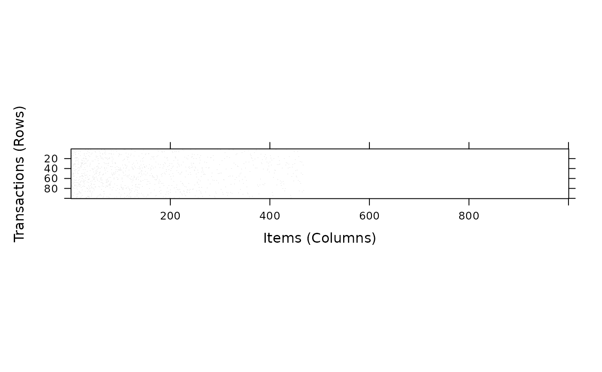

Simulate random transactions using different methods.
Usage
random.transactions(
nItems,
nTrans,
method = "independent",
...,
verbose = FALSE
)
random.patterns(
nItems,
nPats = 2000,
method = NULL,
lPats = 4,
corr = 0.5,
cmean = 0.5,
cvar = 0.1,
iWeight = NULL,
verbose = FALSE
)Arguments
- nItems
an integer. Number of items to simulate
- nTrans
an integer. Number of transactions to simulate
- method
name of the simulation method used (see Details Section).
- ...
further arguments used for the specific simulation method (see details).
- verbose
report progress?
- nPats
number of patterns (potential maximal frequent itemsets) used.
- lPats
average length of patterns.
- corr
correlation between consecutive patterns.
- cmean
mean of the corruption level (normal distribution).
- cvar
variance of the corruption level.
- iWeight
item selection weights to build patterns.
Value
Returns a ntrans x nitems transactions object.
Details
Currently two simulation methods are implemented:
"independent"(Hahsler et al, 2006): All items are treated as independent. The transaction size is determined byrpois(lambda - 1) + 1, wherelambdacan be specified (defaults to 3). Note that one subtracted from lambda and added to the size to avoid empty transactions. The items in the transactions are randomly chosen using the numeric probability vectoriProbof lengthnItems(default: 0.01 for each item)."agrawal"(see Agrawal and Srikant, 1994): This method creates transactions with correlated items usingrandom.patters(). The simulation is a two-stage process. First, a set ofnPatspatterns (potential maximal frequent itemsets) is generated. The length of the patterns is Poisson distributed with meanlPatsand consecutive patterns share some items controlled by the correlation parametercorr. For later use, for each pattern a pattern weight is generated by drawing from an exponential distribution with a mean of 1 and a corruption level is chosen from a normal distribution with meancmeanand variancecvar. The function returns the patterns as anitemsetsobjects which can be supplied torandom.transactions()as the argumentpatterns. If no argumentpatternsis supplied, the default values given above are used.In the second step, the transactions are generated using the patterns. The length the transactions follows a Poisson distribution with mean
lPats. For each transaction, patterns are randomly chosen using the pattern weights till the transaction length is reached. For each chosen pattern, the associated corruption level is used to drop some items before adding the pattern to the transaction.
References
Michael Hahsler, Kurt Hornik, and Thomas Reutterer (2006). Implications of probabilistic data modeling for mining association rules. In M. Spiliopoulou, R. Kruse, C. Borgelt, A. Nuernberger, and W. Gaul, editors, From Data and Information Analysis to Knowledge Engineering, Studies in Classification, Data Analysis, and Knowledge Organization, pages 598–605. Springer-Verlag.
Rakesh Agrawal and Ramakrishnan Srikant (1994). Fast algorithms for mining association rules in large databases. In Jorge B. Bocca, Matthias Jarke, and Carlo Zaniolo, editors, Proceedings of the 20th International Conference on Very Large Data Bases, VLDB, pages 487–499, Santiago, Chile.
See also
Other itemMatrix and transactions functions:
abbreviate(),
c,
crossTable(),
duplicated(),
extract,
hierarchy,
image,
inspect(),
is.superset(),
itemFrequency(),
itemFrequencyPlot(),
itemMatrix-class,
match(),
merge(),
sample(),
sets,
size(),
supportingTransactions(),
tidLists-class,
transactions-class,
unique()
Examples
## generate random 1000 transactions for 200 items with
## a success probability decreasing from 0.2 to 0.0001
## using the method described in Hahsler et al. (2006).
trans <- random.transactions(
nItems = 200, nTrans = 1000,
lambda = 5, iProb = seq(0.2, 0.0001, length.out = 200)
)
## size distribution
summary(size(trans))
#> Min. 1st Qu. Median Mean 3rd Qu. Max.
#> 1.000 4.000 5.000 5.048 6.000 12.000
## display random data set
image(trans)

## use the method by Agrawal and Srikant (1994) to simulate transactions
## which contains correlated items. This should create data similar to
## T10I4D100K (we just create 100 transactions here to speed things up).
patterns <- random.patterns(nItems = 1000)
summary(patterns)
#> set of 2000 itemsets
#>
#> most frequent items:
#> item680 item487 item640 item193 item936 (Other)
#> 63 59 59 53 51 7732
#>
#> element (itemset/transaction) length distribution:sizes
#> 1 2 3 4 5 6 7 8 9 10 11
#> 91 316 473 416 324 195 105 49 18 11 2
#>
#> Min. 1st Qu. Median Mean 3rd Qu. Max.
#> 1.000 3.000 4.000 4.008 5.000 11.000
#>
#> summary of quality measures:
#> pWeights pCorrupts
#> Min. :2.378e-07 Min. :0.0000
#> 1st Qu.:1.482e-04 1st Qu.:0.2892
#> Median :3.398e-04 Median :0.4925
#> Mean :5.000e-04 Mean :0.5004
#> 3rd Qu.:6.882e-04 3rd Qu.:0.7196
#> Max. :4.588e-03 Max. :1.0000
#>
#> includes transaction ID lists: FALSE
trans2 <- random.transactions(
nItems = 1000, nTrans = 100,
method = "agrawal", patterns = patterns
)
image(trans2)
## plot data with items ordered by item frequency
image(trans2[, order(itemFrequency(trans2), decreasing = TRUE)])
